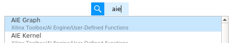
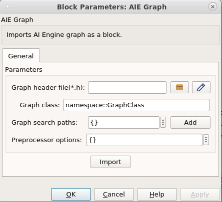
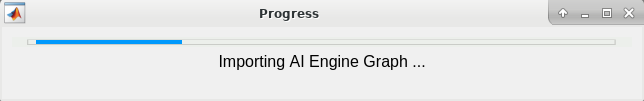
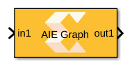
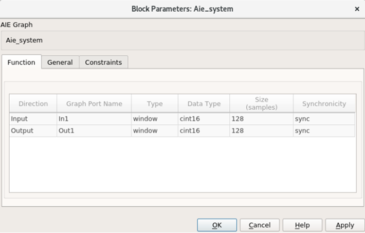
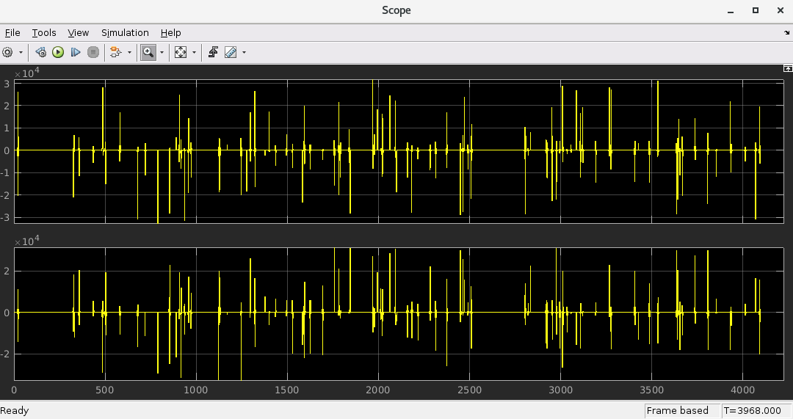
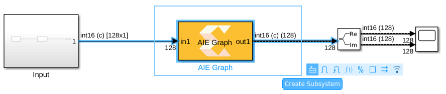
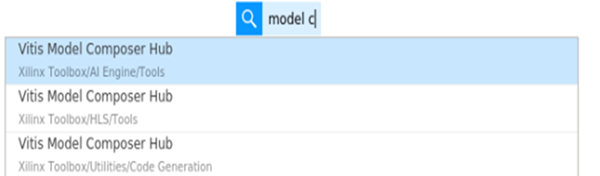
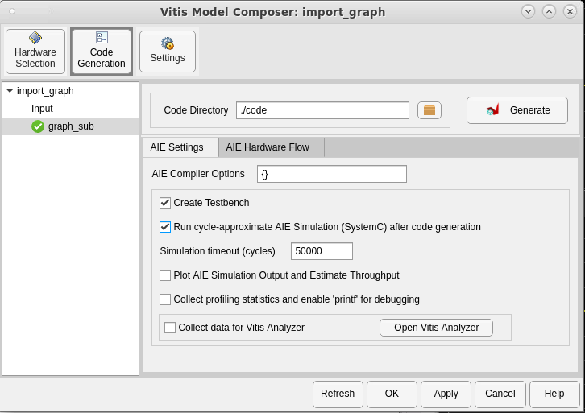
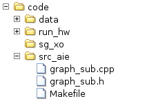

<html>
<head>
<title></title>
<meta name="viewport" content="width=device-width, initial-scale=1">
</head>
<body>
<h1 id="lab-2-importing-ai-engine-graphs">Lab 2: Importing AI Engine Graphs</h1>
<html>    
<script>
function myFunction() {

var path = document.location.pathname;
var directory = path.substring(path.indexOf('/'), path.lastIndexOf('/'));

commandURI="matlab:xmcHtmlOpenDesign('" + directory + "');"

document.location=commandURI
}
</script>
<noscript>Sorry, your browser does not support JavaScript!</noscript>
       
<button type="button" style="background-color:#d0d028; font-size: 20px;" onclick="myFunction()">Open Design</button>  
              
</html>
<p>This section of the tutorial shows how to import AI Engine graphs into Vitis Model Composer, generate the code, and simulate using AI Engine SystemC simulation.</p>
<h3 id="procedure">Procedure</h3>
<p>This lab has following steps:</p>
<ul>
<li>In Step 1, you build your design by importing AI Engine Graph code in Vitis Model Composer.</li>
<li>In Step 2, you simulate the design.</li>
<li>In Step 3, you generate a graph code and simulate using AI Engine SystemC simulation.</li>
</ul>
<h2 id="step-1-build-an-ai-engine-design-using-graph-code">Step 1: Build an AI Engine Design using Graph Code</h2>
<p>In this step you will import graph code (generated using the design in Lab 1) using the AIE Graph block available in the Model Composer AI Engine library and build a design.</p>
<ol>
<li><p>In the MATLAB® Current Folder, navigate to <samp> AIEngine_Library/Lab2/ </samp> </p></li>
<li><p>Double-click <samp> import_graph.slx </samp> to open the model. This is a model with a source and a sink and you will fill the design in-between.</p></li>
<li><p>From the Library Browser, select the AIE Graph block from the AI Engine library. Drag the block into the <samp> import_graph.slx </samp> file.<br />
<br><br><br />
<br><br> You can also click on the canvas and start typing <code>AIE Graph</code>.<br />
<br><br></p></li>
<li><p>Double-click the block and select <strong>Source file (*.cpp)</strong> from the Graph file parameter as shown.<br />
<br><br></p></li>
</ol>
<blockquote>
<p> <strong>Note</strong>: Here, the *.cpp flow is used to import the graph. Alternatively, you can use the\ *.h flow (in which case the following steps will differ slightly).</p>
</blockquote>
<ol start="5">
<li><p>Update the block parameters as follows:<br />
<br><br> <strong>Graph source file(*.cpp)</strong>: <samp> aie_system.cpp </samp><br />
<br><br> <strong>Graph search paths</strong>: Either browse to locate the kernels or enter {<code>'./kernels/src', './kernels/inc', './include'</code>} as the parameter.<br />
<br><br> <strong>Preprocessor options</strong>: Leave empty</p></li>
<li><p>Click <strong>Import</strong>. You will see the Progress window as shown in the following figure. Once complete, the AIE Graph block GUI interface will get updated.<br />
<br><br><br />
<br><br></p></li>
<li><p>Observe the Function tab in the AIE graph block parameters as shown.<br />
<br><br></p></li>
<li><p>Click <strong>OK</strong> and connect the AIE Graph block as shown in the following figure.</p></li>
</ol>
<h2 id="step-2-simulate-the-design">Step 2: Simulate the Design</h2>
<ol>
<li>Click <strong>Simulate</strong>. You will get similar results as those in Lab 1 (Import AIE Kernel).<br />
<br><br></li>
</ol>
<h2 id="step-3-code-generation-and-ai-engine-systemc-simulation">Step 3: Code Generation and AI Engine SystemC Simulation</h2>
<ol>
<li>Create a subsystem for the graph block.<br />
<br><br></li>
</ol>
<blockquote>
<p> <strong>Note</strong>: In this particular design scenario only one graph code is imported. But in a case where we have multiple graphs imported and connected, Vitis Model Composer automatically generates the top module which includes interconnections of all blocks.</p>
</blockquote>
<ol start="2">
<li><p>Assign the subsystem name as <code>graph_sub</code>.</p></li>
<li><p>Drag the Vitis Model Composer Hub block from the library browser or simply click on the canvas and start typing <code>Model Composer Hub</code>.<br />
<br><br></p></li>
<li><p>Double-click the Vitis Model Composer Hub block and make changes as follows (Similar to those in Lab 1 - Import AIE kernel).<br />
<br><br></p></li>
<li><p>Click <strong>Apply</strong>, then click <strong>Generate</strong> and <strong>Run</strong>.</p></li>
<li><p>The Simulation procedure is similar to that of Lab 1 (Import AIE Kernel). It also generates the Target directory (<samp> ./code </samp> in this case) under which you can see the top level graph code under <samp> code/src_aie </samp> directory and the code/data directory which contains the data logged from the Simulink design along with output from the AIE simulation.<br />
<br><br></p></li>
<li><p>Notice the log in the Progress window after completion. Click <strong>OK</strong>.<br />
<br><br></p></li>
</ol>
<h3 id="conclusion">Conclusion</h3>
<p>In this lab, you learned:</p>
<ul>
<li>How to import AI Engine graph code into Vitis Model Composer.</li>
<li>How to generate the top level graph code using the Model Composer Hub block.</li>
<li>How to perform the AI Engine SystemC simulation.</li>
</ul>
<p>The following solution directory contains the final Vitis Model Composer files for this lab.</p>
<ul>
<li><samp> AIEngine_Library/Lab2/Solution </samp></li>
</ul>

</div>
<style type='text/css'>body {
font: 400 16px/1.5 "Helvetica Neue", Helvetica, Arial, sans-serif;
color: #111;
background-color: #fdfdfd;
-webkit-text-size-adjust: 100%;
-webkit-font-feature-settings: "kern" 1;
-moz-font-feature-settings: "kern" 1;
-o-font-feature-settings: "kern" 1;
font-feature-settings: "kern" 1;
font-kerning: normal;
padding: 30px;
}

@media only screen and (max-width: 600px) {
body {
padding: 5px;
}

body > #content {
padding: 0px 20px 20px 20px !important;
}
}

body > #content {
margin: 0px;
max-width: 900px;
border: 1px solid #e1e4e8;
padding: 10px 40px;
padding-bottom: 20px;
border-radius: 2px;
margin-left: auto;
margin-right: auto;
}

hr {
color: #bbb;
background-color: #bbb;
height: 1px;
flex: 0 1 auto;
margin: 1em 0;
padding: 0;
border: none;
}

/**
* Links
*/
a {
color: #0366d6;
text-decoration: none; }
a:visited {
color: #0366d6; }
a:hover {
color: #0366d6;
text-decoration: underline; }

pre {
background-color: #f6f8fa;
border-radius: 3px;
font-size: 85%;
line-height: 1.45;
overflow: auto;
padding: 16px;
}

/**
* Code blocks
*/

code {
background-color: rgba(27,31,35,.05);
border-radius: 3px;
font-size: 85%;
margin: 0;
word-wrap: break-word;
padding: .2em .4em;
font-family: SFMono-Regular,Consolas,Liberation Mono,Menlo,Courier,monospace;
}

pre > code {
background-color: transparent;
border: 0;
display: inline;
line-height: inherit;
margin: 0;
overflow: visible;
padding: 0;
word-wrap: normal;
font-size: 100%;
}


/**
* Blockquotes
*/
blockquote {
margin-left: 30px;
margin-top: 0px;
margin-bottom: 16px;
border-left-width: 3px;
padding: 0 1em;
color: #828282;
border-left: 4px solid #e8e8e8;
padding-left: 15px;
font-size: 18px;
letter-spacing: -1px;
font-style: italic;
}
blockquote * {
font-style: normal !important;
letter-spacing: 0;
color: #6a737d !important;
}

/**
* Tables
*/
table {
border-spacing: 2px;
display: block;
font-size: 14px;
overflow: auto;
width: 100%;
margin-bottom: 16px;
border-spacing: 0;
border-collapse: collapse;
}

td {
padding: 6px 13px;
border: 1px solid #dfe2e5;
}

th {
font-weight: 600;
padding: 6px 13px;
border: 1px solid #dfe2e5;
}

tr {
background-color: #fff;
border-top: 1px solid #c6cbd1;
}

table tr:nth-child(2n) {
background-color: #f6f8fa;
}

/**
* Others
*/

img {
max-width: 100%;
}

p {
line-height: 24px;
font-weight: 400;
font-size: 16px;
color: #24292e; }

ul {
margin-top: 0; }

li {
color: #24292e;
font-size: 16px;
font-weight: 400;
line-height: 1.5; }

li + li {
margin-top: 0.25em; }

* {
font-family: -apple-system, BlinkMacSystemFont, "Segoe UI", Helvetica, Arial, sans-serif, "Apple Color Emoji", "Segoe UI Emoji", "Segoe UI Symbol";
color: #24292e; }

a:visited {
color: #0366d6; }

h1, h2, h3 {
border-bottom: 1px solid #eaecef;
color: #111;
/* Darker */ }</style>
</body>
</html>
